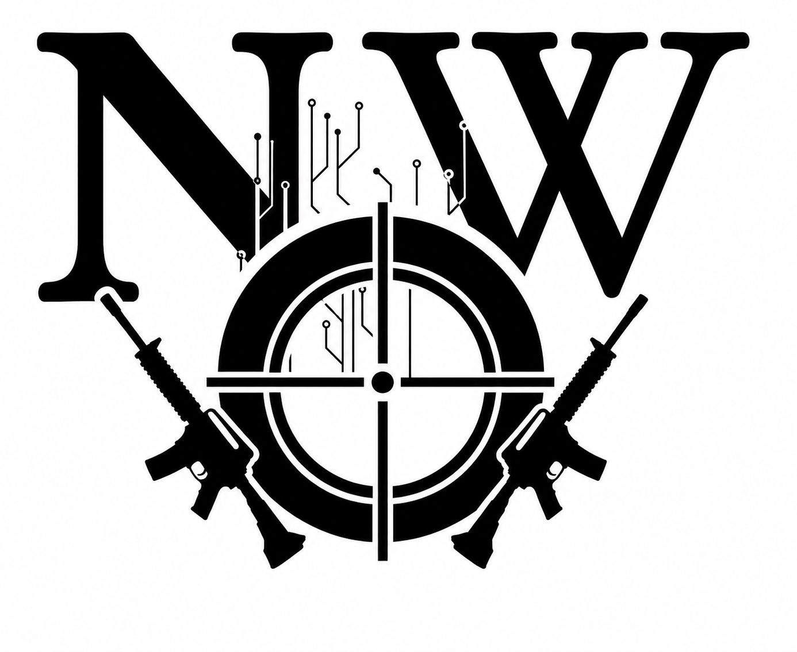

Kapitel 1

Der Tag, an dem die Welt unterging, war sonnig – und jetzt brennt sie schon viel zu lange.
Ich starre auf das verrostete Ortsschild vor mir, das aussieht, als würde es jeden Moment aus den Angeln gerissen werden. Der Wind pfeift daran vorbei und lässt die Scharniere quietschen. Einige Buchstaben sind längst verblasst. Der Schriftzug Rock Springs Coal ist noch zu erkennen. Darunter prangt ein einziges Wort: Welcome.
Ich lache kurz auf und höre die Bitterkeit in meiner Stimme.
Ja klar, willkommen in der Hölle trifft es wohl eher. Das Wort wirkt wie ein Hohn.
Ich richte meinen Blick wieder nach vorne.
Vor mir erstreckt sich die kleine Stadt – zerstörte Häuser, zerfallene Tankstellen, verlassene Industrieanlagen. Dahinter ragen die roten Felsen in den Himmel, als wollten sie die Ruinen umschließen.
Ich hatte zwar nie vor, der Main Character einer Apokalypse zu sein, aber hier sind wir nun. Ob sich Rick Grimes auch so gefühlt hat? Und ob er sich anfangs ebenfalls dachte: Wird schon nicht so schlimm werden.
Naja, wenigstens gibt es keine Zombies … oder doch?
Seufzend setze ich meinen Weg auf der staubigen Straße fort, halte Ausschau nach brauchbaren Gebäuden, während die Sonne erbarmungslos auf meinen Rücken brennt. Die Stadt wirkt wie eine Geisterstadt, zerbrochene Fenster sind in fast jedem Gebäude zu erkennen, und alles ist von einer dichten Sandschicht bedeckt. Im Augenwinkel entdecke ich das verstaubte Schild meiner Lieblings-Fast-Food-Kette. Etwas zieht in meiner Brust, als ich kurz das Lachen meiner Familie höre – ein Echo aus einer Welt, die es nicht mehr gibt. Auf dem Weg in den Urlaub haben wir jedes Mal in einem dieser Restaurants gehalten.
Ich schlucke schwer und schiebe den Gedanken fort, konzentriere mich wieder auf meine Umgebung. Schon von Weitem mache ich eine alte Tankstelle aus und wische mir mit dem Handrücken den Schweiß aus dem Gesicht. Vor dem Gebäude stehen zwei verrostete Jeeps, ihre Reifen platt.
Lautlos nähere ich mich der Tür. Ein verblasstes Open -Schild hängt schief an einer rostigen Kette, Scherben knirschen unter meinen Stiefeln, als ich mich dem Eingang nähere. Vorsichtig drücke ich die Tür auf und spähe in den dämmrigen Raum. Verstaubte Regale voller Lebensmittel reihen sich vor mir auf. Auf den ersten Blick nicht geplündert.
Jackpot.
Ich trete ein, mein Herz schlägt etwas schneller, und gehe durch die Regalreihen. Alles, was noch essbar aussieht, wandert in meinen Rucksack – Konserven, Instantnudeln, mehrere Packungen Beef Jerky. Dann ziehe ich den Getränkekühlschrank auf, packe so viele Wasserflaschen wie möglich ein, mein Blick bleibt an einer Reihe Colas hängen.
Ob die noch schmecken? Ich stecke trotzdem eine ein.
Als der Rucksack voll ist, greife ich mir noch eine Wasserflasche, reiße sie auf und trinke gierig die halbe Flasche leer.
Ich streife weiter durch die Reihen und lasse meine Finger über die Staubschicht gleiten, entdecke ein Süßigkeitenregal. Ein Seufzen entweicht mir, als ich Schokoriegel, Bonbons und Chips sehe. Ich reiße eine Tüte Cheetos auf und stopfe sie in mich hinein. Ich muss ein leichtes Stöhnen unterdrücken. Der Geschmack ist zwar leicht ranzig, die Chips weich, aber sie sind immer noch genießbar und das Beste, was ich seit Langem gegessen habe. Als die Tüte leer ist, kippe ich den Rest Wasser hinterher und wische mir den Mund ab. Anschließend finde ich Nüsse, weitere Konserven mit süßen Früchten und noch mehr Beef Jerky. Mein Rucksack ist inzwischen bis oben hin vollgestopft.
Kurz überlege ich – mein Weg führt durch den Grand-Teton-Nationalpark. Werden die Vorräte reichen? Wer weiß, wann ich das nächste Mal etwas zu essen finde.
Mein Blick schweift durch den Raum, bis ich eine schmutzige Stofftasche entdecke. Ich beschließe, sie mitzunehmen und noch mehr einzupacken.
Bevor ich die Tankstelle verlasse, gönne ich mir ein Festmahl: Käsemacaroni aus der Dose, eine Packung Nüsse, eingelegte Erdbeeren, ein halbes Glas Erdnussbutter und eine Handvoll steinharter Gummibärchen. Zum Schluss trinke ich den letzten Schluck abgestandene Cola und verdrehe vor Genuss die Augen. So gut habe ich lange nicht mehr gegessen. In meinem Bauch spüre ich ein leichtes Ziehen, aber ich versuche, es auszublenden. Ich lehne den Kopf an ein Regal und schließe kurz die Augen. Müdigkeit überkommt mich. Ein kleiner Powernap dürfte noch drin sein. Nur kurz die Augen schließen.
Blinzelnd komme ich wieder zu mir. Dunkelheit hat sich über alles gelegt wie dichter, schwarzer Rauch. Wie lange habe ich geschlafen?
Für einen kurzen Moment schließe ich die Augen erneut – in der kindischen Hoffnung, in meinem alten Kinderzimmer aufzuwachen. Dass das hier alles nur ein furchtbarer Albtraum ist.
Als ich kurz darauf die Augen wieder öffne, fällt Mondlicht durch ein staubiges Fenster und wirft kalte Streifen auf den Boden. Im selben Augenblick platzt meine Hoffnung wie eine verdammte Seifenblase. Ein langer Atemzug entweicht mir und ich zwinge mich aufzustehen, schiebe mich durch die Regalreihen zur Tür. Vorsichtig öffne ich sie und trete hinaus.
Ich hebe den Blick – und die Sterne erinnern mich daran, wer ich einmal war.
Der Himmel glitzert über mir. Der Mond hängt hell und klar am Firmament, umgeben von Millionen funkelnder Sterne. Er wirkt so klar, so rein, als hätte ihn nichts berührt. Ich seufze, nur die Erde liegt in Finsternis. Einen Moment bleibe ich stehen, atme tief und sauge den Anblick auf, ehe ich meine Aufmerksamkeit wieder auf die Straße richte. Es ist immer noch angenehm warm, und es riecht nach einer typischen Sommernacht.
Etwas verloren schleiche ich durch die verlassene Stadt, die Stille ist erdrückend. Nur ab und zu durchbricht das Heulen von Kojoten die Nacht.
Ich gehe weiter, bis ich am Rand der Stadt stehe. Hier ist es nicht mehr ganz so unheimlich still. Zikaden singen, und ihr Konzert weckt Erinnerungen – an Sommerabende, an Lagerfeuer, an Gespräche mit Freunden. Wehmütig schiebe ich den Gedanken weg.
Irgendwann finde ich ein zweistöckiges Haus am Stadtrand, mit Blick über die weiten Ebenen von Wyoming. Dies sollte ein guter Schlafplatz für heute sein.
Auf Zehenspitzen schleiche ich um das Haus, spähe durch die Fenster und suche nach einem Eingang. Im Garten finde ich einen Spaten, er liegt schwer in meiner Hand und hat bereits Rost angesetzt. Ich nehme ihn mit zur Hintertür, doch noch bevor ich ihn ansetze, bemerke ich, dass die Tür nicht abgeschlossen ist. Ein mulmiges Gefühl breitet sich in mir aus.
Könnten hier schon Menschen hausen? Mit knirschenden Zähnen wäge ich meine Optionen ab, aber die Müdigkeit hängt mir in den Knochen.
Mit klopfendem Herzen drücke ich die Tür auf und betrete das Haus. Dunkelheit und Stille umfangen mich.
Lautlos schleiche ich durch Küche, Wohnzimmer und Bad, finde aber keine Anzeichen anderer Menschen. Daraufhin wage ich mich die Treppe hoch. Die erste Stufe quietscht und ich halte unwillkürlich die Luft an.
Nichts.
Also gehe ich weiter. Auch die zweite Etage ist leer. Ich betrete ein Schlafzimmer, in dessen Mitte ein Bett mit vielen Kissen steht. Fahles Mondlicht fällt durch das Fenster und ich lasse mein Blick kurz durch den Raum schweifen. Keine Gefahren in Sicht. Im nächsten Augenblick schleppe ich mich zum Bett.
Seufzend lasse ich mich darauf fallen. Mein Rucksack liegt griffbereit neben mir, mein Messer, das ich aus meinem Beinholster löse, wandert unter das Kopfkissen. Gedanken drängen sich auf. Die Zeit vor drei Jahren.
Als alles begann.
Als ich alles verlor.
Ein EMP, sagen manche, der alle neue Technologie lahmlegte. Gebäude stürzten ein, als hätte jemand es gezielt geplant. Doch das war nicht das Schlimmste. Es war, was danach folgte. Ein Ereignis, tödlich und unsichtbar. Die Welt verstummte. Fast die gesamte Bevölkerung starb, als hätte es sie nie gegeben. Innerhalb weniger Minuten war die Welt so still wie die Leere zwischen den Sternen. Dunkel und tödlich.
Der EMP ist nur eine Vermutung, ein Gerücht. Sicher sein kann ich nicht. Aber es ergibt Sinn. Nur eine Frage verfolgt mich seither: Warum zum Teufel?
Sind wirklich Menschen dafür verantwortlich oder war es ein Unfall? Wer könnte von so etwas profitieren?
Vielleicht ist es auch ein neuer Superschurke, der sich aus der Unterwelt erhoben hat.
Die entscheidende Frage ist nur:
Marvel oder DC?
Ich habe eindeutig zu viele Superheldenfilme gesehen.
Meine Finger fahren geistesabwesend über die Narbe an meinem rechten Handgelenk – dort, wo früher mein Vitalchip saß. Nachdem ich ahnte, dass er der Grund für all das war, schnitt ich ihn heraus. Wahrscheinlich war er defekt. So wie bei den wenigen anderen, die jetzt noch umherziehen. Oder es war geplant. Der Gedanke daran erzeugt eine Gänsehaut, aber nicht die gute Art.
Ich blinzle Tränen weg, zwinge mich, die Augen zu schließen. Aber wie jede Nacht lassen mich die Gedanken nicht los. Nur diesmal siegt die Erschöpfung, und ich schlafe schnell ein.
Zuckend schrecke ich hoch. Stimmen dringen leise und gedämpft von unten an mein Ohr. Ich kann nicht verstehen, was sie sagen. Und ganz ehrlich? Es interessiert mich auch nicht.
Entschlossen greife ich nach meinem Messer, befestige es am Beinholster und schnappe meinen Rucksack. Mein Blick fällt auf die Stofftasche mit den restlichen Vorräten und ich fluche leise. Ich könnte sie mitnehmen aber ich muss aus dem zweiten Stock klettern. Zu riskant.
Ich trete ans Fenster und öffne es langsam. Warme Nachtluft weht mir ins Gesicht. Vorsichtig blicke ich nach unten, ungefähr fünf Meter bis zum Boden. Wenn ich mir nicht alle Knochen brechen will, eindeutig zu hoch für einen Sprung.
Plötzlich höre ich schwere Stiefel auf der Treppe. Mein Puls schießt in die Höhe, Panik breitet sich in mir aus, doch ich zwinge mich, ruhig zu atmen.
Denk nach, Lethea. Du bist doch keine Anfängerin mehr. Du bist jetzt professionell darin, panisch zu sein und dabei trotzdem funktionstüchtig zu bleiben.
Mein Blick sucht die Fassade ab und bleibt an einer Regenrinne hängen. Ich zögere nur einen Moment, bete dass sie hält und klettere hinaus, klammere mich an das kalte Metall. Die Rinne ächzt sofort gefährlich unter meinem Gewicht. Vorsichtig hangle ich mich nach unten. Meine Hände beginnen zu schmerzen, über mir öffnet sich eine Tür. Stimmen werden lauter. Ich darf jetzt nicht stehen bleiben. Noch ein Stück. Wenn sie die Tasche finden, wissen sie, dass jemand hier war. Die Regenrinne knarrt bedrohlich, ich halte kurz inne, wage kaum zu atmen. Noch ein halber Meter. Dann gibt das Metall nach.
Ich stoße mich ab und lande hart auf dem Boden. Der Aufprall fährt mir durch die Beine, doch ich ignoriere den Schmerz.
Meine Schmerztoleranz ist bei dem täglichen Überlebenskampf so rasant gestiegen wie die Benzinpreise vor dem Weltuntergang.
Über mir werden Stimmen lauter, aufgeregter. Sie wissen jetzt, dass sie nicht alleine sind. Also bleibt mir nur eine Möglichkeit.
Ich renne.
Renne, bis meine Lungen brennen, renne, als würde mein Leben davon abhängen.
Und vielleicht tut es das auch.
Irgendwann bleibe ich keuchend stehen, zwinge Luft in meine Brust. Immer noch schnaubend wie eine verdammte Ratte auf Speed kurz vor dem Herzinfarkt, blicke ich über meine Schulter zurück. Die Stadt liegt still in der Ferne. Keine Verfolger. Noch nicht.
Doch hier draußen bin ich sichtbar und viel zu leicht angreifbar.
Der Boden ist offen und sandig und bietet kaum Deckung. Die Erde ist noch feucht vom Tau, die Luft kühl. Am Horizont steigt langsam die Sonne auf und taucht alles in ein sanftes Violett. Ich atme tief ein, schultere meinen Rucksack fester und beschließe, so viel Strecke wie möglich zu machen, bevor die Sonne höher steigt und keine Gnade mehr kennt.
Eins habe ich in dieser Welt schnell gelernt: Wenn du überleben willst, darfst du nicht stehen bleiben. Niemals.
Ich ziehe meine blaue NASA-Cap tiefer ins Gesicht, die Sonne brennt erbarmungslos auf mich herab. Mit der Hand schirme ich die Augen ab und blicke nach oben. Es müsste mittlerweile Mittag sein. Wenn ich hier draußen nicht all meinen Wasservorrat trinken oder dehydrieren will, brauche ich dringend Schatten.
Seufzend ziehe ich meine zerknitterte Karte aus dem Rucksack und breite sie vor mir aus. Mein Blick folgt der zurückgelegten Strecke: Angefangen in Denver, meiner Heimat, ging es über die offene Steppe von Cheyenne, mit einem kurzen Zwischenstopp in Laramie. Von dort weiter durch den Medicine Bow National Forest bis zur kleinen Stadt Rock Springs – mein letzter Halt.
Ich atme angestrengt aus, während ich die Route betrachte, die noch vor mir liegt. Der Weg führt mich weiter nach Jackson, durch den Grand-Teton-Nationalpark. Danach entweder nach Pocatello oder Idaho Falls, da bin ich mir noch nicht ganz sicher. Von dort aus nach Boise, dann durch das Kaskadengebirge, über den Snoqualmie Pass. Und schließlich mein Ziel. Der Grund, warum ich mir diesen harten Weg überhaupt antue: Seattle.
Auf der Karte ist die Stadt mit einem roten Kreis markiert, daneben stehen drei Buchstaben: NWO.
Ich lache kurz auf.
New World Order.
Eine Gruppe, die Ordnung in die Welt bringen will – ja klar. Dabei halten sie sich selbst an keine Regeln.
Meine Fäuste ballen sich, als sich ungebetene Bilder in mein Gedächtnis drängen: schmutzige Hände, die mich zu Boden drücken.
Ich schüttele heftig den Kopf, versuche, sie zu vertreiben, und richte meinen Blick nach vorn. In der Ferne zeichnet sich etwas am Horizont ab.
Vielleicht ist es eine alte Industrieanlage.
Vielleicht auch nur eine Fata Morgana.
Vielleicht erleide ich gerade einen Hitzeschlag und kippe in den nächsten Minuten tot um.
Wer weiß das schon.
Trotzdem entscheide ich mich, in diese Richtung weiterzugehen. Viel Wahl bleibt mir ohnehin nicht.
Nach einer halben Stunde schweißtreibenden Marsches bin ich völlig durchnässt. Vor mir ragen zwei große, verrostete Tanks auf. Dahinter ein verworrenes Netz aus rostigen Rohren – vermutlich eine alte Ölraffinerie. Für einen Moment denke ich an den Stellenwert von Öl in der alten Welt. Kriege wurden deswegen geführt, ganze Nationen litten darunter. Von den Umweltfolgen ganz zu schweigen.
Und jetzt? Die meisten dieser Männer, die daran verdienten, sind wohl tot. Und ich hoffe, sie schmoren in der Hölle. In einer, die noch grausamer ist als diese hier.
Ich ducke mich unter den Rohren hindurch, steige vorsichtig über einige hinweg. Fast am Ende entdecke ich einen einzelnen Baum, daneben werfen die Rohre genug Schatten. Endlich.
Ich nehme den Rucksack von den Schultern, ziehe ihn mir nach vorn und lasse mich seufzend am Stamm des Baums nieder. Mit zittrigen Fingern greife ich hinein, hole eine Wasserflasche hervor und trinke gierig. Danach lehne ich mich zurück, schließe die Augen und versuche, meine Atmung zu beruhigen. Ich sollte versuchen, ein wenig zu schlafen.
Ein paar Stunden später ist es zwar immer noch brütend heiß, aber ich beschließe, mich wieder auf den Weg zu machen – weiter in Richtung Grand-Teton-Nationalpark. Ich folge dem staubigen Highway, der sich durch die öde Landschaft und verlassene Dörfer zieht. Meine Stiefel wirbeln Staub auf, während ich auf einem Stück Beef Jerky kauend meine Umgebung beobachte. Weit und breit kein Anzeichen von anderen Menschen. Hier draußen trifft man nur selten auf jemanden, und ich bin froh darüber. Allein bin ich besser dran, brauche mich auf niemanden zu verlassen und kann selbst entscheiden.
Ich war schon immer ein Mensch, der die Stille bevorzugte. Still sein war einfacher. Nur bei meiner Familie konnte ich sein, wer ich war, musste mich nicht verstellen.
Jeder Gedanke an sie schmerzt, also zwinge ich mich, an etwas anderes zu denken, und setze einen Fuß vor den anderen. Auch wenn Hitze, Staub und Stille drohen, mich langsam zu ersticken, halte ich nicht an.
Mein Ziel – Seattle – ist der einzige Grund, warum ich noch nicht aufgegeben habe.